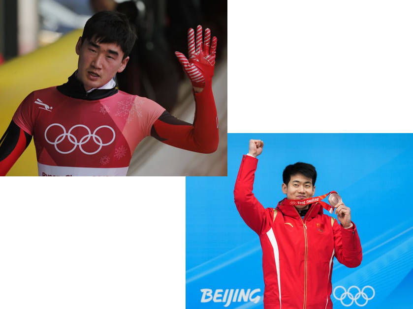
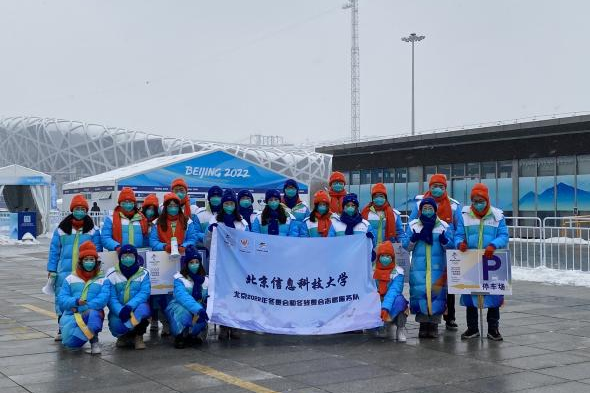
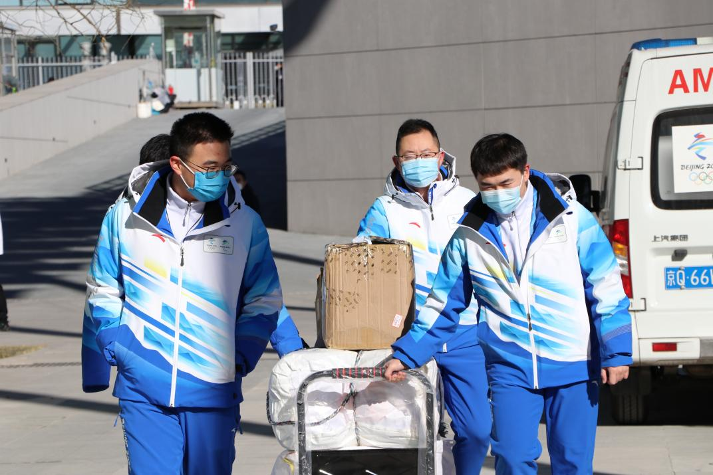

冰雪盛事创辉煌，冬奥精神齐推广
【来源】：信息科大奥宣团 | 2022-03-05
这个寒假，恰逢北京冬奥会和中国农历新年相遇，北京信息科技大学自动化学院“快乐冬奥追梦人”实践团的同学们通过线上、线下相结合的方式，向大家讲述冬奥故事、弘扬冬奥精神、推广冰雪运动、宣传冬奥文化，与此同时，担任了冬奥志愿者的同学们兢兢业业地做好志愿服务，他们是历史的见证者，也是为北京冬奥顺利开展提供保障的奉献者。
聚焦冬奥项目，领悟奥运精神
首先，宣讲团的同学以PPT的形式为我们介绍了冠军故事和有关钢架雪车，空中技巧，单板滑雪，花样滑冰，速度滑冰等项目的科普。

宣讲人叶桦阳负责介绍的是钢架雪车以及两位冠军运动员耿文强老师和闫文港老师。两位老师都是在中国钢架雪车队成立初期，从田径跳远项目转战钢架雪车，放弃了自己苦练多年的跳远，转而在刚刚起步的钢架雪车领域里做拓荒者，这个决定非常勇敢，令人敬佩。为了能让中国钢架雪车快速追上外国选手的步伐，他们刻苦训练，在短短的几年时间里不断取得优秀成绩，一次又一次地创造队史。例如，在2021年的钢架雪车世界杯赛中，耿文强老师一举夺得男子单人的冠军，这是中国首个钢架雪车世界杯冠军；在2022年北京冬奥男子钢架雪车比赛上，闫文港老师成功摘得一枚铜牌，这是中国钢架雪车队的第一枚冬奥奖牌。两位老师勇于突破自我，不断挑战高峰的精神值得我们学习。训练伊始，纵使心生恐惧，全身被撞得淤青，两位老师也从未想过放弃，咬着牙坚持了下来，而这也成为了他们成功的关键，不轻言放弃已然成为了他们最真实的写照。 宣讲组的同学们还展示了一些比赛项目或运动员相关的图片和视频，生动具体地带大家全面了解冬奥会比赛项目，讲解过程中宣讲人通过提问的方式与观众互动，问题分为客观题和主观题，客观题主要是从加深观众对项目和冠军运动员了解的角度设计的，让回答问题的观众能够对项目和冠军运动员有一个初印象，第一位答对的观众可以获得冬奥纪念品一份，而主观题主要从对冠军运动员优秀精神与品质感悟和收获的角度出发，观众们都积极踊跃地回答问题，互动获得了良好的反馈。
陪伴四海来客，展现华夏风采
此外，实践团中还有担任城市志愿者和赛会志愿者的同学，他们在辛苦的志愿工作之余，还和大家分享了很多担任志愿工作时拍摄的一些富有意义的照片。

担任赛会志愿者的朱欣然同学说：“我觉得自己是一个很幸运的人，能在最好的年纪遇到最盛大的体育赛事，能成为一名冬奥会志愿者，结识来自不同学校但同样优秀的志愿者朋友，与他们一起见证并全程参与2022年北京冬奥会和冬残奥会。虽然不能像闭环内志愿者一样，有机会接触来自世界各地的运动员，也不能像赛事服务的小伙伴那样，服务各行各业的现场观众，但我觉得自己与他们同样重要，作为志愿者大家庭的一员，我们都努力在各自的岗位上发光发热，用实际行动展现中国青年的风采，全力保障2022年北京冬奥会和冬残奥会的顺利举办。” 冬日凛凛，遗憾由于疫情的原因，本次寒假的冬奥宣讲活动只能在线上进行，但这丝毫不影响我们冬奥志愿组的如火般热情和动力。在指导老师和叶桦阳组长的带领下，成员们积极参与，友好合作，以求把自己负责的工作做到最好。
2022北京冬奥不仅对于体育从事者是四年一度的大事，更是体现一个国家的强大与影响力；当然，与每一个中国人都有密不可分的关系。而作为大学生的我们，更应该自觉肩负这一使命，以不同的方式：为冬奥作宣讲，或是为冬奥志愿做幕后工作，更或是去冬奥比赛的各个场地志愿服务等等。快乐的我们会用更大的努力去服务运动员、服务人民、服务社会。
浏览量：56

- 联系
我们

工作日：
早9:00-晚18:00
杨老师：
400-888-8888